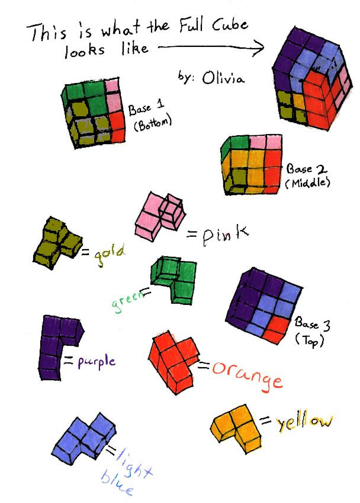

Olivia, a 6th grader, shows how she built the 3x3x3 cube from the 7 Soma pieces. (The Danish Author Piet Hein conceived the idea of the SOMA cube in 1936).
Making the cube was not easy. Mr. Cohen asked me to draw the pieces and show how I put them together to make the cube. I had to make it, color code the pieces and draw the three dimensional view in two dimensions. To finish the drawing and directions for making the cube took me about 8 days. Sometimes making the cube was frustrating, but it was fun. (See Katie's note to Olivia below).

Olivia,
I made the 7 pieces and tried to put them together by myself. I was getting frustrated, so I used your sheet above, that was hanging on Mr. Cohen's wall.
I solved it and it was really easy to follow! Good job!
From Katie (8th grader)
See ErinK's 16 ways she made the 3x3x3 cube with the 7 Soma pieces.
_________________________________________
To read about the history of the SOMA cube, see
http://www.fam-bundgaard.dk/SOMA/HISTORY.HTM
=========================================